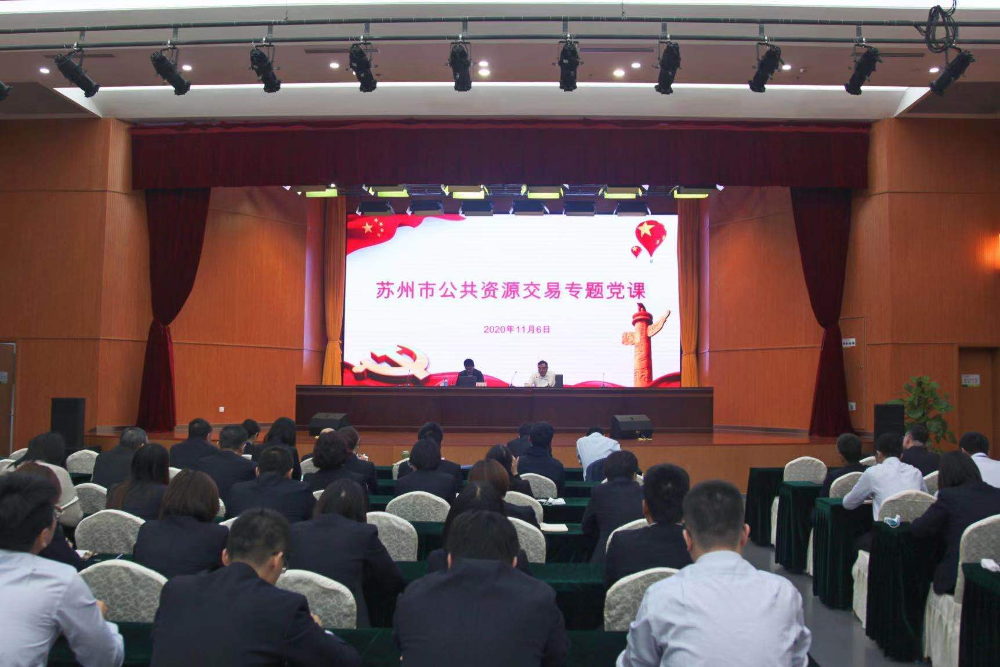
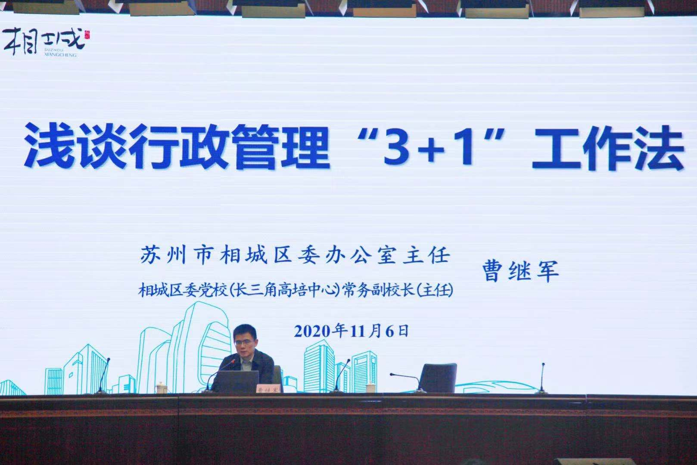
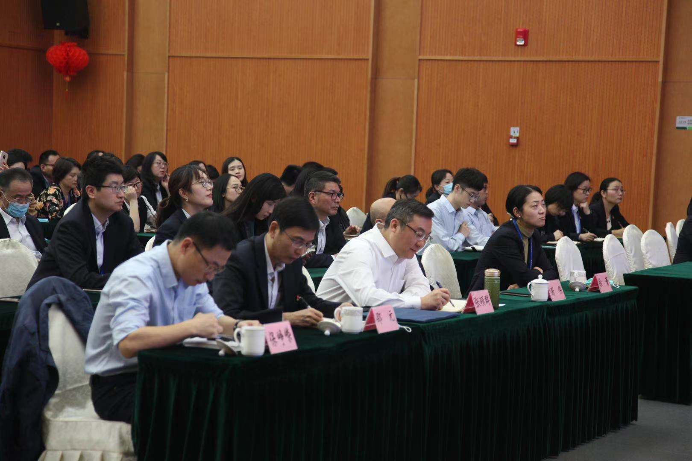

【信息发布时间：2020-11-10阅读次数：】 【我要打印】 【关闭】
11月6日上午，苏州市行政审批局副局长张硕群邀请相城区委办主任、相城区委党校(长三角高培中心)常务副校长(主任)曹继军为苏州市公共资源交易人员讲授行政管理“3+1”工作法专题党课。

曹主任首先介绍了相城区发展优势和长远规划，随后结合自身工作内容和实践经验，详细阐述了行政管理“3+1”工作法的具体内容，即制度化、专业化、项目化和人性化管理。其中制度化管理是指“3书1点”，包括内部制度汇编、文件政策选编、工作流程汇编和廉政风险防控点；专业化管理是指“3课1说”，包括早读课、必修课、自习课和青年说；项目化管理是指“3建1争”，包括建好团队、建好品牌、建好队伍和争一流；人性化管理是指“3心1起”，包括谈心谈话、关心关怀、耐心耐力和一起奋斗，一起战斗。

张硕群副局长指出，曹主任这套工作法刚柔相济，既饱含着勇争一流的热血斗志，也展现了团结互助的团队风貌，对我们改进工作方法、提高服务效能、加强内部控制都具有重要的借鉴意义。我们也借此对相城区的发展有了更清晰的认知，为公共资源交易工作融入相城发展大战略创造了条件。希望各位同志今后继续深入领会行政管理“3+1”工作法，将这套好做法与公共资源交易工作实际相结合，以提升市场主体的获得感和满意度为目标，打造公共资源交易服务新标杆！

市行政审批局公管处、市公共资源交易中心、下属国有企业全体人员和公共资源交易分中心部分人员参加。